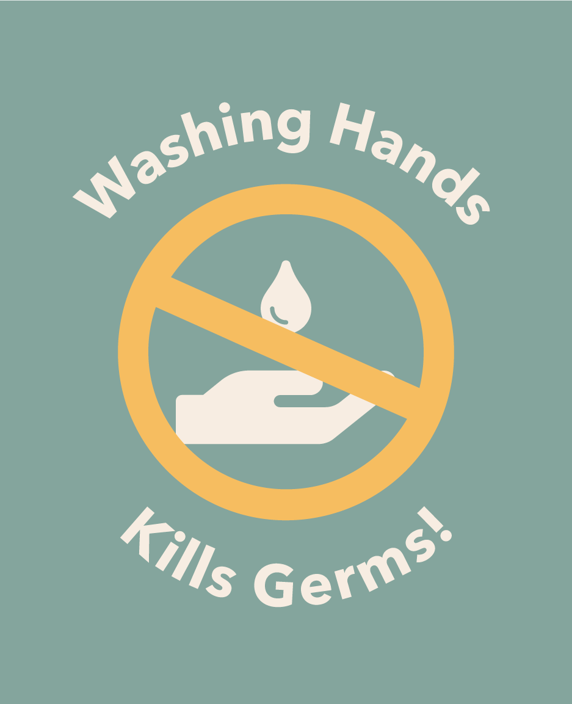

About Me
My name is Bumbo and I am a germ. I like to gobble up nutrients and
energy, and I can make *toxins*. Don’t worry though I am a nice germ.

My favotite things to do
I do a lot of cool things.
- Attach to people
- Make anti-hand washing propaganda
- Protec
- Attac
My Propaganda Journey
Ever since I was a zygote I have always wanted to serve my germ
country of Germtopia and create propaganda. It is important that the
big skin creatures know that washing hands kills germs. Quadrillions
of germs die every year because of hand washing. This needs to end.
Germ Science
The four major types of germs are:
Bacteria (say: bak-TEER-ee-uh): These tiny, one-celled creatures get nutrients from their environments in order to live. In
some cases that environment is a human body. Bacteria can reproduce outside of the body or within the body as they cause
infections. Some infections that bacteria cause include ear infections, sore throats (tonsillitis or strep throat), cavities, and
pneumonia (say: new-MO-nyuh).
But not all bacteria are bad. Some bacteria are good for our bodies — they help keep things in balance. Good bacteria live in
our intestines and help us use the nutrients in the food we eat and make waste from what's left over. We couldn't make the
most of a healthy meal without these important helper germs! Some bacteria are also used by scientists in labs to produce
medicines and vaccines (say: vak-SEENS).
Viruses (say: VY-rus-iz): These germs need to be inside living cells to grow and reproduce. Most viruses can't survive very
long if they're not inside a living thing like a plant, animal, or person. Whatever a virus lives in is called its host. When viruses
get inside people's bodies, they can spread and make people sick. Viruses cause
chickenpox,measles, flu, and many other diseases.
Fungi (say: FUN-guy): These are multi-celled (made of many cells), plant-like organisms. Unlike other plants, fungi can't
make their own food from soil, water, and air. Instead, fungi get their nutrition from plants, people, and animals. They love to
live in damp, warm places, and many fungi are not dangerous in healthy people. An example of something caused by fungi is
athlete's foot, that itchy rash that people sometimes get between their toes.
Protozoa (say: pro-toh-ZOH-uh): These one-celled organisms love moisture and often spread diseases through water. Some
protozoa cause intestinal infections that lead to diarrhea, nausea, and belly pain.